Continuous Distribution Generators
Source:vignettes/continuous-distribution-generators.Rmd
continuous-distribution-generators.RmdRandomWalker provides a comprehensive suite of random walk generators based on continuous probability distributions. Each function follows a consistent API design for ease of use.
Table of Contents
- Common Parameters
- Normal Distribution
- Brownian Motion
- Geometric Brownian Motion
- Beta Distribution
- Cauchy Distribution
- Chi-Squared Distribution
- Exponential Distribution
- F Distribution
- Gamma Distribution
- Log-Normal Distribution
- Logistic Distribution
- Student’s t Distribution
- Uniform Distribution
- Weibull Distribution
- Comparison Guide
Common Parameters
All continuous distribution generators share these common parameters:
| Parameter | Type | Description | Default |
|---|---|---|---|
.num_walks |
Integer | Number of walks to generate | 25 |
.n |
Integer | Number of steps per walk | 100 |
.initial_value |
Numeric | Starting value for the walk | 0 |
.dimensions |
Integer | Spatial dimensions (1, 2, or 3) | 1 |
Additional parameters are distribution-specific and control the shape of the probability distribution.
Normal Distribution
random_normal_walk()
The most commonly used random walk, based on the normal (Gaussian) distribution.
Function Signature:
random_normal_walk(
.num_walks = 25,
.n = 100,
.mu = 0,
.sd = 1,
.initial_value = 0,
.dimensions = 1
)Distribution Parameters: - .mu - Mean
of the distribution (default: 0) - .sd - Standard deviation
(default: 1)
Use Cases: - General-purpose random walks - Modeling measurement errors - Simulating natural phenomena with normal noise
Example:
# Basic normal walk
random_normal_walk(.num_walks = 10, .n = 100) |>
visualize_walks()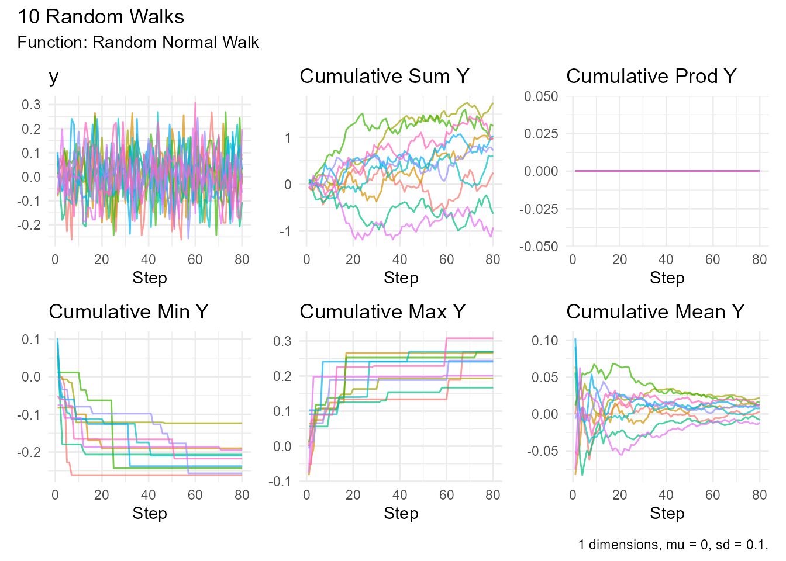
# With custom mean and SD
random_normal_walk(
.num_walks = 5,
.n = 200,
.mu = 0.01, # Slight upward drift
.sd = 0.5, # Lower volatility
.initial_value = 100
) |> visualize_walks()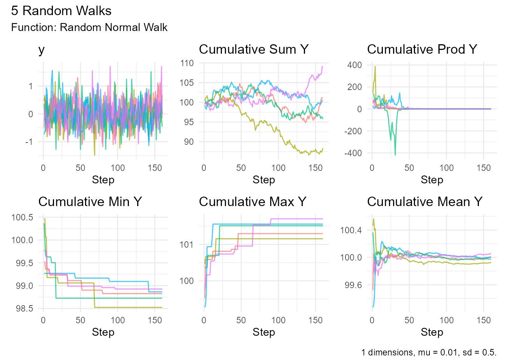
# 2D spatial walk
random_normal_walk(
.num_walks = 3,
.n = 500,
.dimensions = 2
) |> visualize_walks()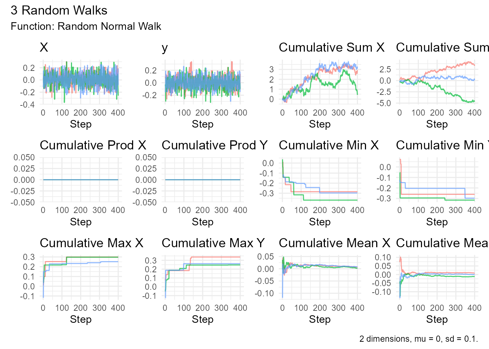
random_normal_drift_walk()
Random walk with deterministic drift component.
Function Signature:
random_normal_drift_walk(
.num_walks = 25,
.n = 100,
.mu = 0,
.sd = 1,
.initial_value = 0,
.dimensions = 1
)Key Difference from
random_normal_walk(): - .drift -
Drift term added to each step (default: 0.1) - Adds explicit drift term:
drift + random_step - More pronounced trending behavior -
Better for modeling processes with clear directional movement
Example:
# Compare walks with and without drift
p1 <- random_normal_walk(.num_walks = 5, .mu = 0.1) |>
visualize_walks(.pluck = "y") +
labs(title = "Normal Walk")
p2 <- random_normal_drift_walk(.num_walks = 5, .mu = 0.1) |>
visualize_walks(.pluck = "y") +
labs(title = "Normal Walk with Drift")
p1 / p2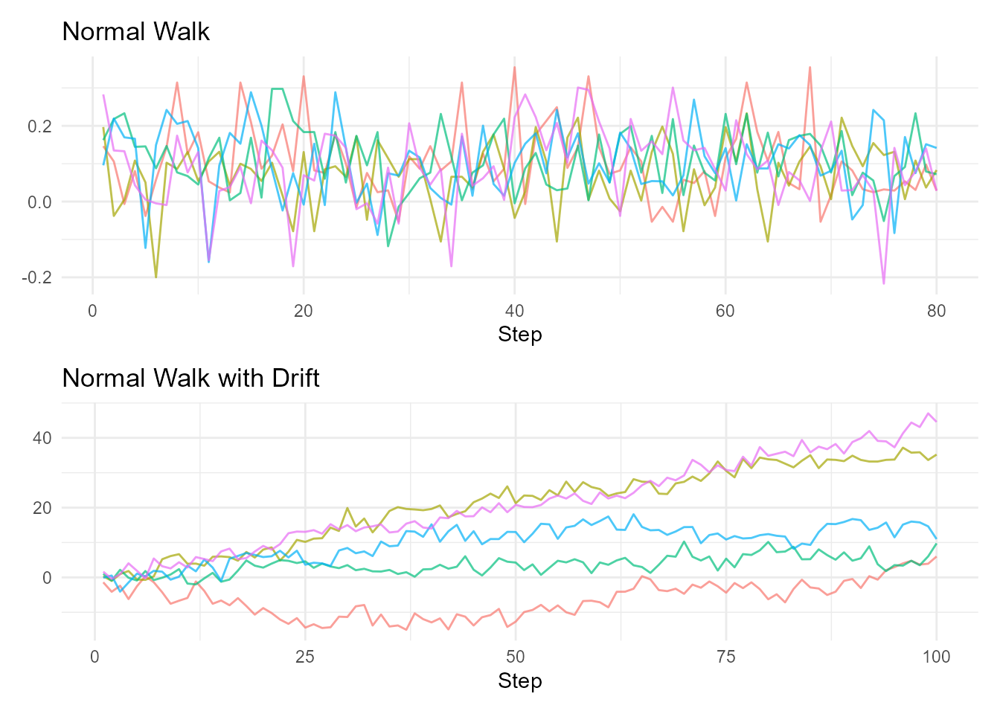
Brownian Motion
brownian_motion()
Standard Brownian motion (Wiener process) - the foundation of stochastic calculus.
Function Signature:
brownian_motion(
.num_walks = 25,
.n = 100,
.delta_time = 1,
.initial_value = 0,
.dimensions = 1
)Parameters: - .num_walks - Number of
walks to generate (default: 25) - .n - Number of steps per
walk (default: 100) - .delta_time - Time increment per step
(default: 1) - .initial_value - Starting value for each
walk (default: 0) - .dimensions - Number of dimensions
(default: 1)
Mathematical Form:
Use Cases: - Financial mathematics (Black-Scholes model) - Physics (particle diffusion) - Signal processing (noise modeling)
Example:
# Standard Brownian motion
brownian_motion(.num_walks = 10) |>
visualize_walks()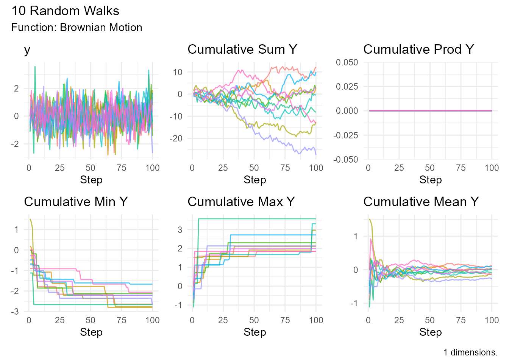
# With drift and volatility
brownian_motion(
.num_walks = 50,
.n = 252,
.delta_time = 0.05,
.initial_value = 100
) |> visualize_walks(.alpha = 0.3)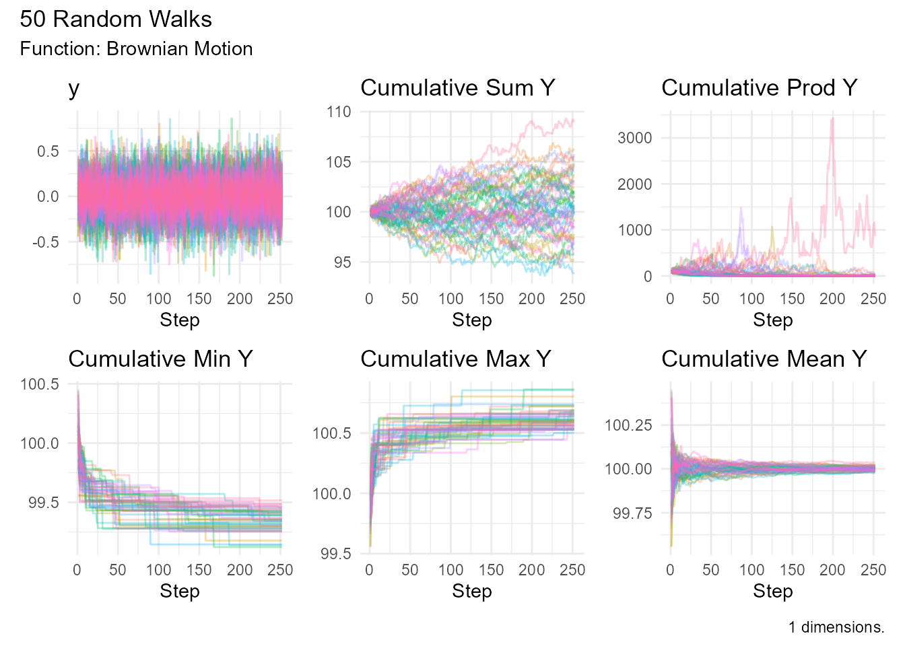
geometric_brownian_motion()
Geometric Brownian motion - the standard model for stock prices.
Function Signature:
geometric_brownian_motion(
.num_walks = 25,
.n = 100,
.mu = 0,
.sigma = 0.1,
.initial_value = 100,
.delta_time = 0.003,
.dimensions = 1
)Parameters: - .mu - Expected return
(drift) - .sigma - Volatility
Mathematical Form:
dS(t) = μ S(t) dt + σ S(t) dW(t)
S(t) = S(0) exp((μ - σ²/2)t + σW(t))Key Properties: - Always positive (can’t go below zero) - Log-normal distribution of prices - Percentage changes are normally distributed
Use Cases: - Stock price modeling - Option pricing - Asset allocation simulations - Monte Carlo risk analysis
Example:
# Model stock prices
stock_sim <- geometric_brownian_motion(
.num_walks = 1000,
.n = 252, # Trading days in a year
.mu = 0.08, # 8% expected return
.sigma = 0.25, # 25% volatility
.initial_value = 100
)
# Visualize scenarios
stock_sim |> visualize_walks(.alpha = 0.1)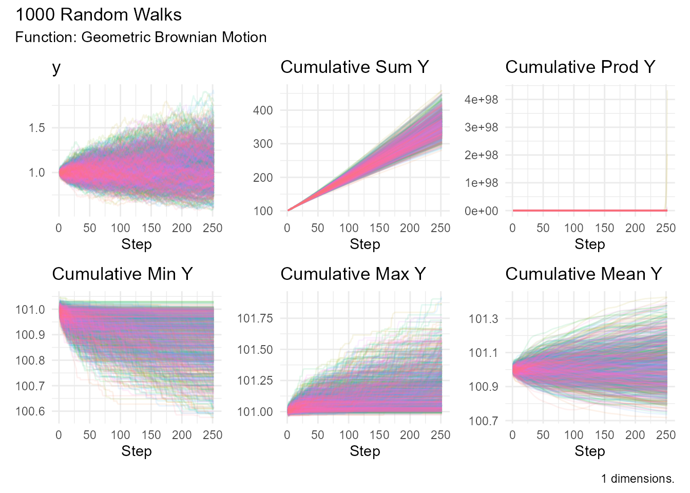
# Analyze outcomes
stock_sim |>
summarize_walks(.value = cum_prod_y, .group_var = walk_number) |>
summarize(
median_price = median(max_val),
prob_profit = mean(max_val > 100),
prob_loss_50 = mean(min_val < 50)
)Beta Distribution
random_beta_walk()
Random walk based on the beta distribution (bounded between 0 and 1).
Function Signature:
random_beta_walk(
.num_walks = 25,
.n = 100,
.shape1 = 2,
.shape2 = 2,
.ncp = 0,
.initial_value = 0,
.samp = TRUE,
.replace = TRUE,
.sample_size = 0.8,
.dimensions = 1
)Parameters: - .shape1 - First shape
parameter (α) - .shape2 - Second shape parameter (β) -
.ncp - Non-centrality parameter (default: 0)
Properties: - Steps are bounded: 0 ≤ step ≤ 1 - Flexible shapes (uniform, U-shaped, bell-shaped) - Mean = α / (α + β) - Variance = (α β) / ((α + β)² (α + β + 1))
Shape Guide: - shape1 = 1, shape2 = 1:
Uniform (0,1) - shape1 = 2, shape2 = 2: Symmetric,
bell-shaped - shape1 = 2, shape2 = 5: Right-skewed -
shape1 = 5, shape2 = 2: Left-skewed
Use Cases: - Modeling proportions or percentages - Bounded processes (e.g., utilization rates) - Success rates over time
Example:
# Symmetric beta walk
random_beta_walk(
.num_walks = 10,
.shape1 = 2,
.shape2 = 2
) |> visualize_walks()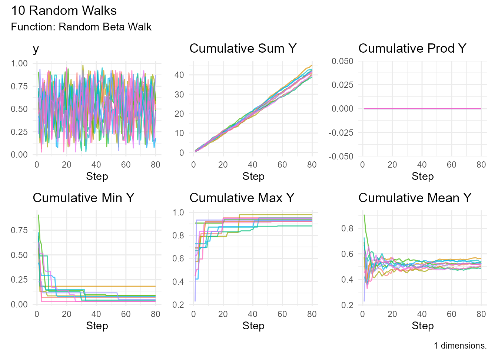
# Right-skewed (toward 0)
random_beta_walk(
.num_walks = 10,
.shape1 = 2,
.shape2 = 5
) |> visualize_walks()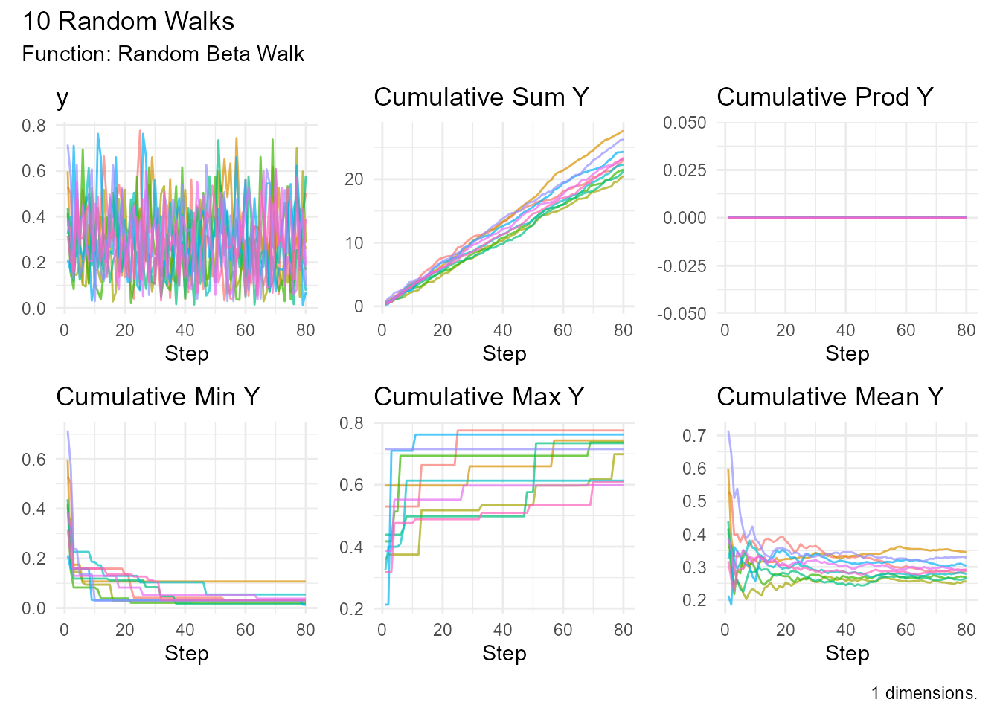
# Compare different shapes
p1 <- random_beta_walk(.shape1 = 1, .shape2 = 1) |>
visualize_walks(.pluck = "y")
p2 <- random_beta_walk(.shape1 = 2, .shape2 = 5) |>
visualize_walks(.pluck = "y")
p1 / p2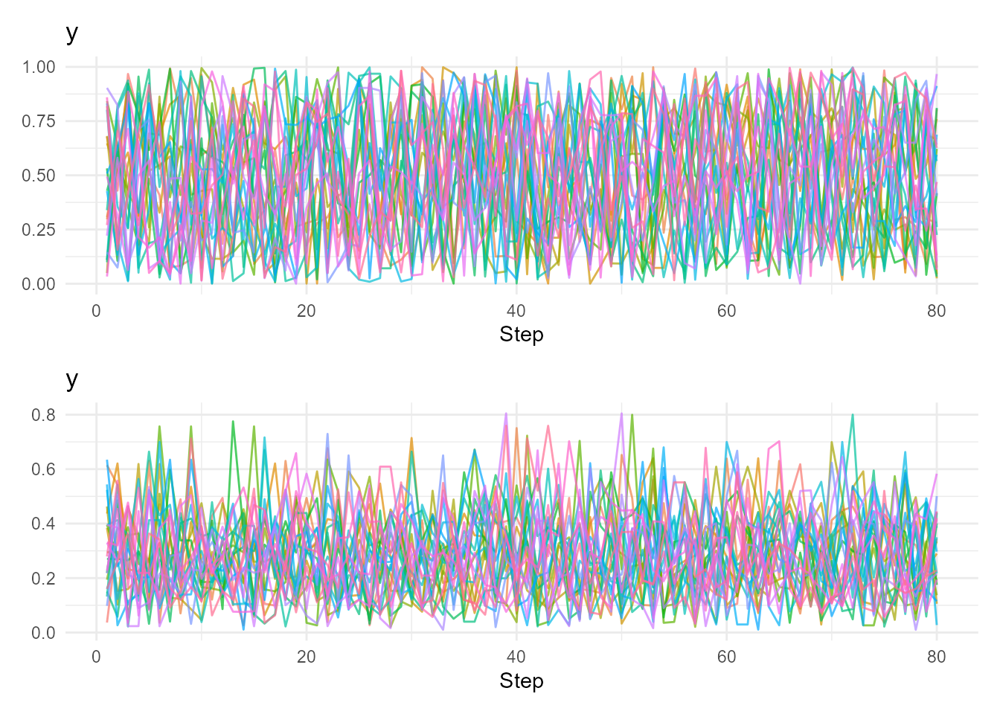
Cauchy Distribution
random_cauchy_walk()
Random walk with heavy tails - extreme values are much more common than in normal distribution.
Function Signature:
random_cauchy_walk(
.num_walks = 25,
.n = 100,
.location = 0,
.scale = 1,
.initial_value = 0,
.samp = TRUE,
.replace = TRUE,
.sample_size = 0.8,
.dimensions = 1
)Parameters: - .location - Location
parameter (median) - .scale - Scale parameter (spread)
Properties: - No defined mean or variance! - Heavy tails (high probability of extreme values) - Symmetric around location - Much more volatile than normal distribution
Use Cases: - Modeling extreme events - Financial crises simulation - Physics (resonance phenomena) - Robust statistics demonstrations
Example:
# Standard Cauchy walk
random_cauchy_walk(.num_walks = 10) |>
visualize_walks()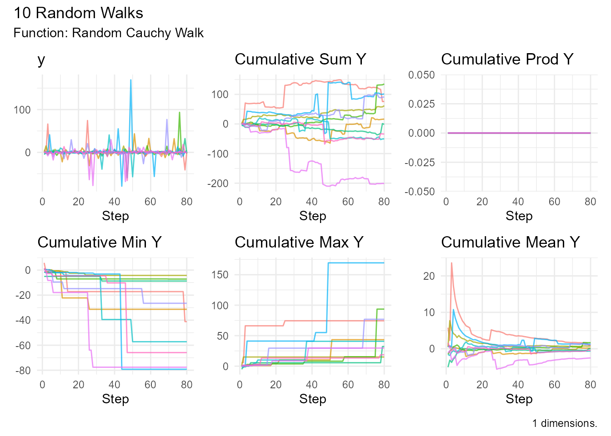
# Compare with normal walk
p1 <- random_normal_walk(.num_walks = 5, .sd = 1) |>
visualize_walks(.pluck = "y") +
labs(title = "Normal Walk")
p2 <- random_cauchy_walk(.num_walks = 5, .scale = 1) |>
visualize_walks(.pluck = "y") +
labs(title = "Cauchy Walk (Heavy Tails)")
p1 / p2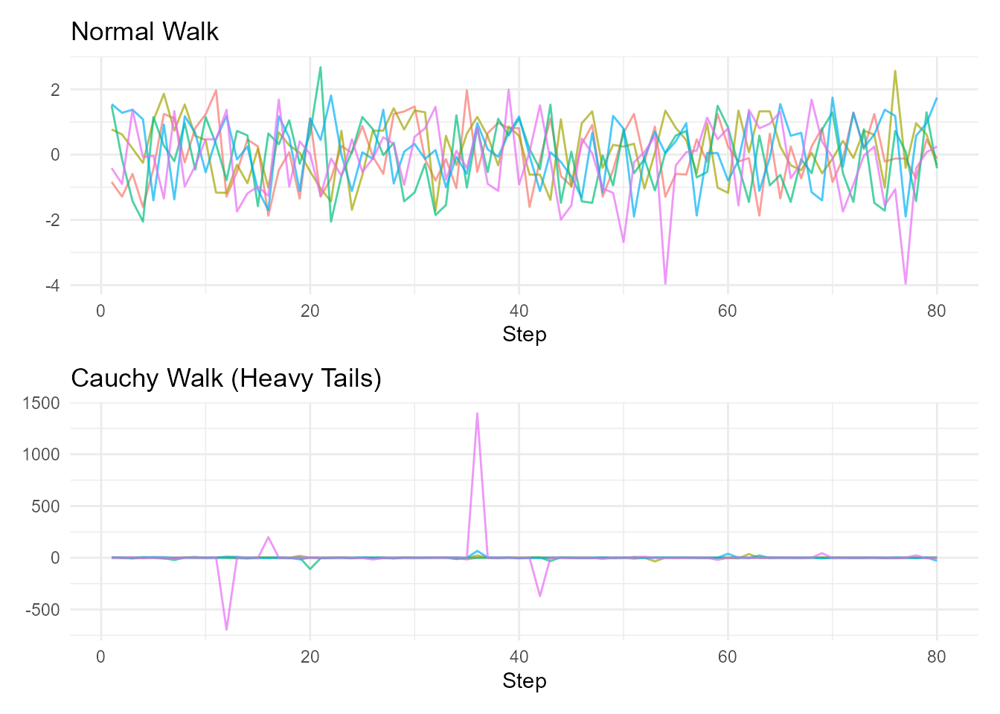
Chi-Squared Distribution
random_chisquared_walk()
Random walk based on chi-squared distribution (always positive).
Function Signature:
random_chisquared_walk(
.num_walks = 25,
.n = 100,
.df = 5,
.ncp = 0,
.initial_value = 0,
.samp = TRUE,
.replace = TRUE,
.sample_size = 0.8,
.dimensions = 1
)Parameters: - .df - Degrees of freedom
- .ncp - Non-centrality parameter (default: 0)
Properties: - Steps are always positive - Right-skewed (especially for low df) - Mean = df - Variance = 2df
Use Cases: - Goodness-of-fit tests - Variance estimation - Quality control - Reliability engineering
Example:
# Low df (very skewed)
random_chisquared_walk(.num_walks = 10, .df = 1) |>
visualize_walks()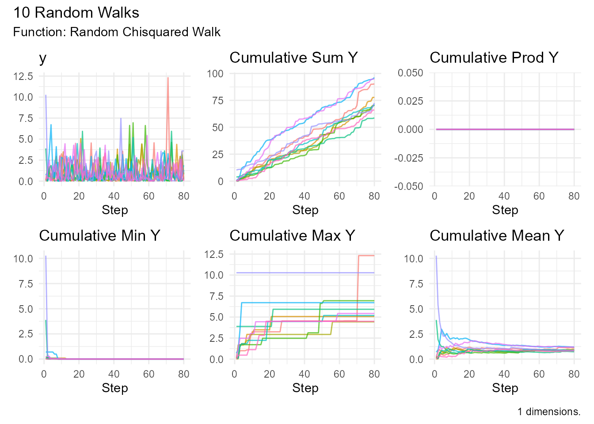
# Higher df (more symmetric)
random_chisquared_walk(.num_walks = 10, .df = 10) |>
visualize_walks()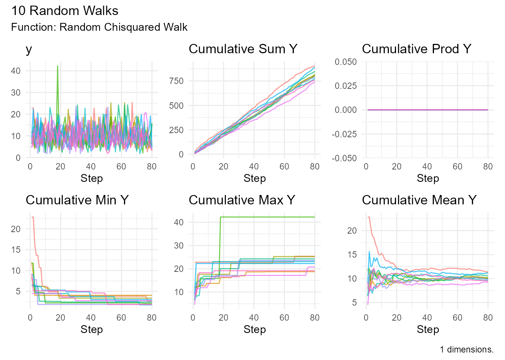
Exponential Distribution
random_exponential_walk()
Random walk with exponentially distributed steps (memoryless property).
Function Signature:
random_exponential_walk(
.num_walks = 25,
.n = 100,
.rate = 1,
.initial_value = 0,
.samp = TRUE,
.replace = TRUE,
.sample_size = 0.8,
.dimensions = 1
)Parameters: - .rate - Rate parameter
(λ)
Properties: - Steps are always positive - Memoryless property - Mean = 1/rate - Variance = 1/rate²
Use Cases: - Time between events (queuing theory) - Lifetime modeling - Radioactive decay - Poisson process intervals
Example:
# Standard exponential
random_exponential_walk(.num_walks = 10) |>
visualize_walks()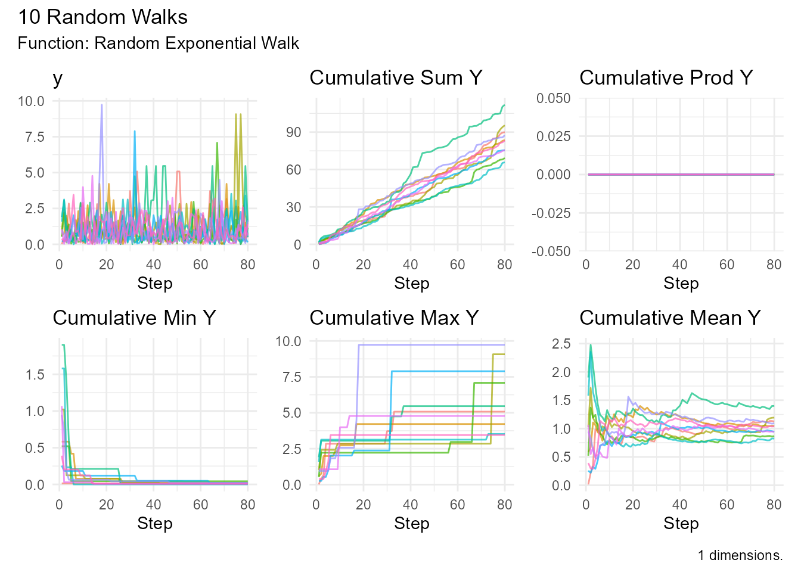
# Fast rate (smaller steps)
random_exponential_walk(.num_walks = 10, .rate = 5) |>
visualize_walks()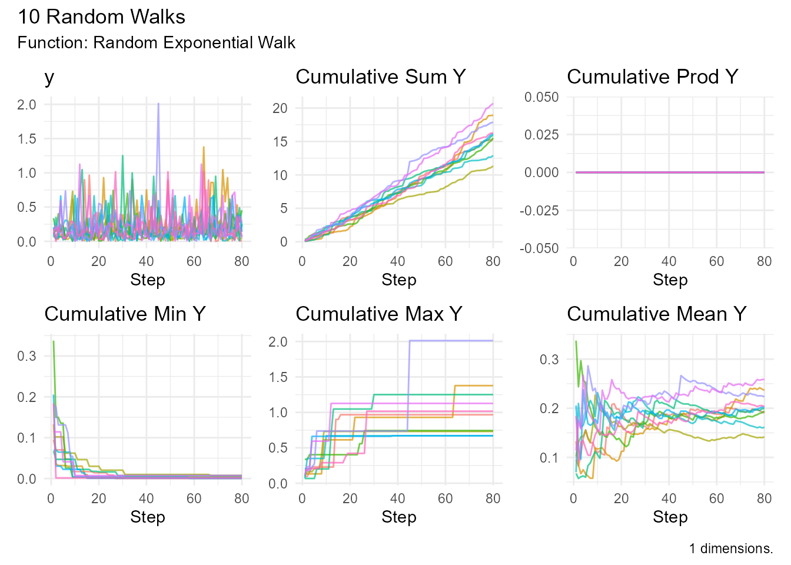
# Slow rate (larger steps)
random_exponential_walk(.num_walks = 10, .rate = 0.5) |>
visualize_walks()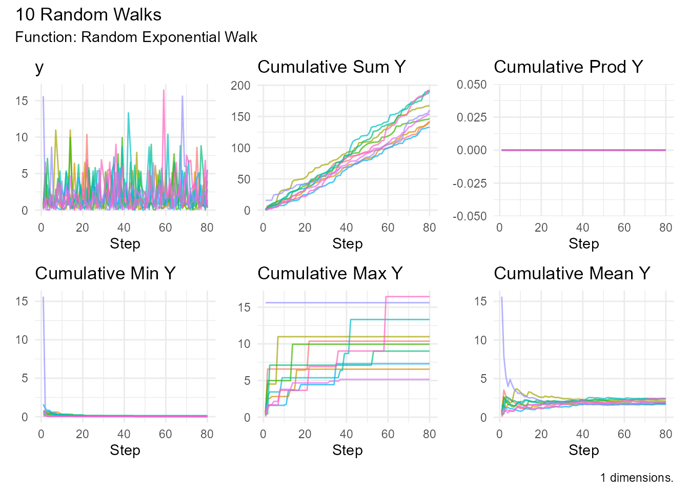
F Distribution
random_f_walk()
Random walk based on F-distribution (ratio of chi-squared variables).
Function Signature:
random_f_walk(
.num_walks = 25,
.n = 100,
.df1 = 5,
.df2 = 5,
.ncp = NULL,
.initial_value = 0,
.samp = TRUE,
.replace = TRUE,
.sample_size = 0.8,
.dimensions = 1
)Parameters: - .df1 - Numerator degrees
of freedom - .df2 - Denominator degrees of freedom -
.ncp - Non-centrality parameter
Use Cases: - ANOVA - Variance ratio tests - Model comparison
Example:
random_f_walk(.num_walks = 10, .df1 = 5, .df2 = 10) |>
visualize_walks()
Gamma Distribution
random_gamma_walk()
Flexible distribution for positive values.
Function Signature:
random_gamma_walk(
.num_walks = 25,
.n = 100,
.shape = 1,
.scale = 1,
.rate = NULL,
.initial_value = 0,
.samp = TRUE,
.replace = TRUE,
.sample_size = 0.8,
.dimensions = 1
)Parameters: - .shape - Shape parameter
(k) - .rate - Rate parameter (β) - .scale -
Scale parameter (1/rate)
Properties: - Steps always positive - Flexible shapes - Mean = shape/rate - Variance = shape/rate²
Use Cases: - Waiting times - Rainfall modeling - Insurance claims - Reliability analysis
Example:
# Different shape parameters
random_gamma_walk(.num_walks = 10, .shape = 1, .rate = 1) |>
visualize_walks()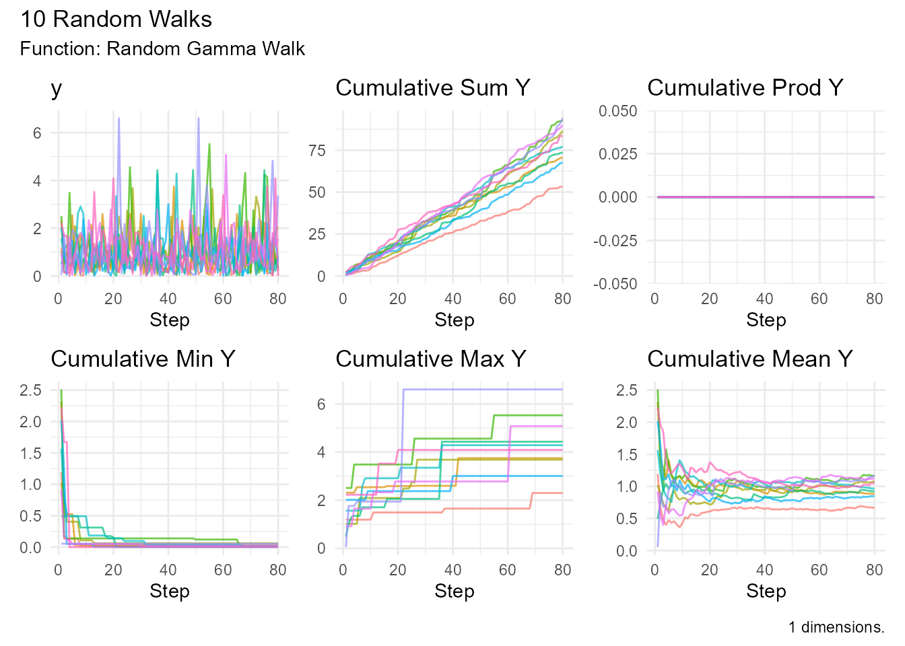
random_gamma_walk(.num_walks = 10, .shape = 5, .rate = 1) |>
visualize_walks()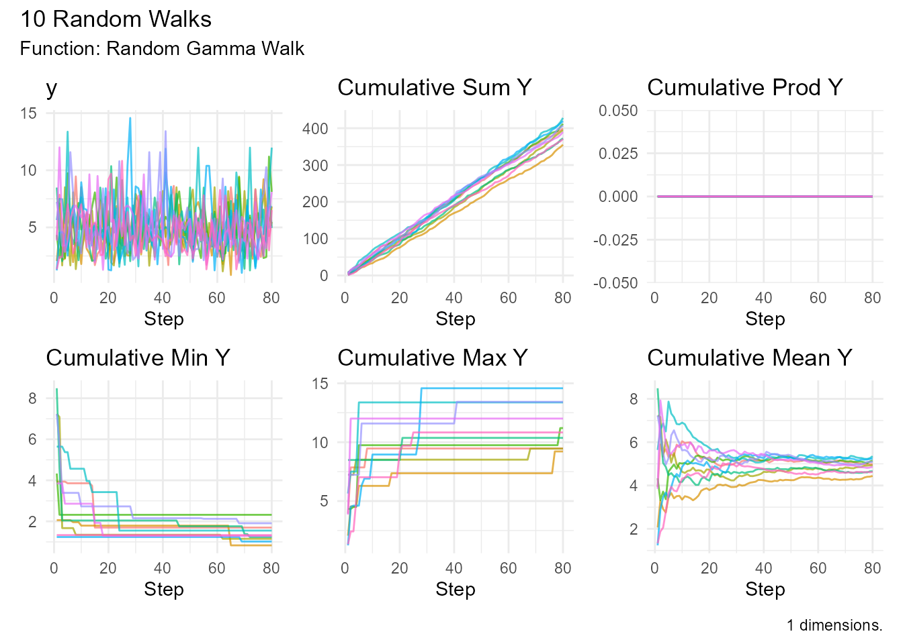
Log-Normal Distribution
random_lognormal_walk()
Random walk where log of steps is normally distributed.
Function Signature:
random_lognormal_walk(
.num_walks = 25,
.n = 100,
.meanlog = 0,
.sdlog = 1,
.initial_value = 0,
.samp = TRUE,
.replace = TRUE,
.sample_size = 0.8,
.dimensions = 1
)Parameters: - .meanlog - Mean of log -
.sdlog - Standard deviation of log
Properties: - Steps always positive - Right-skewed - Multiplicative processes
Use Cases: - Income distributions - File sizes - Particle sizes - Stock prices (alternative to GBM)
Example:
random_lognormal_walk(.num_walks = 10) |>
visualize_walks()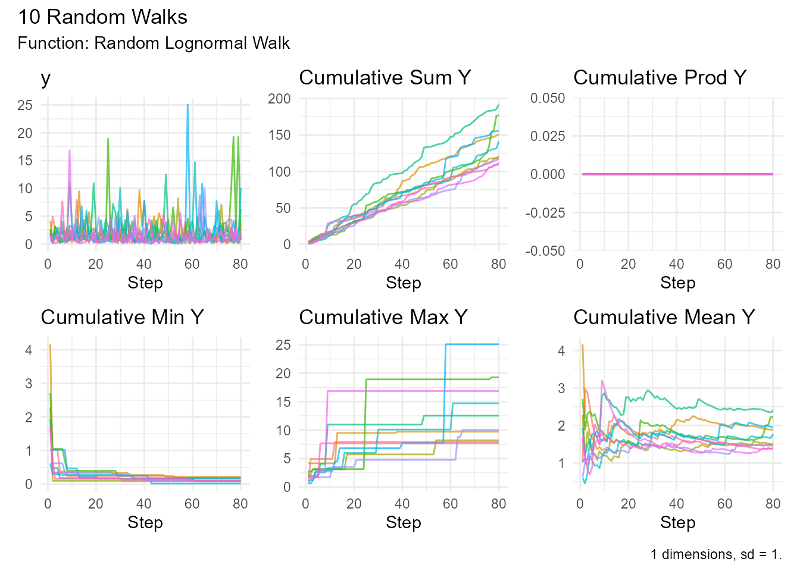
Logistic Distribution
random_logistic_walk()
Random walk with logistic distribution (heavier tails than normal).
Function Signature:
random_logistic_walk(
.num_walks = 25,
.n = 100,
.location = 0,
.scale = 1,
.initial_value = 0,
.samp = TRUE,
.replace = TRUE,
.sample_size = 0.8,
.dimensions = 1
)Use Cases: - Growth models - Binary classification - Neural networks
Example:
random_logistic_walk(.num_walks = 10) |>
visualize_walks()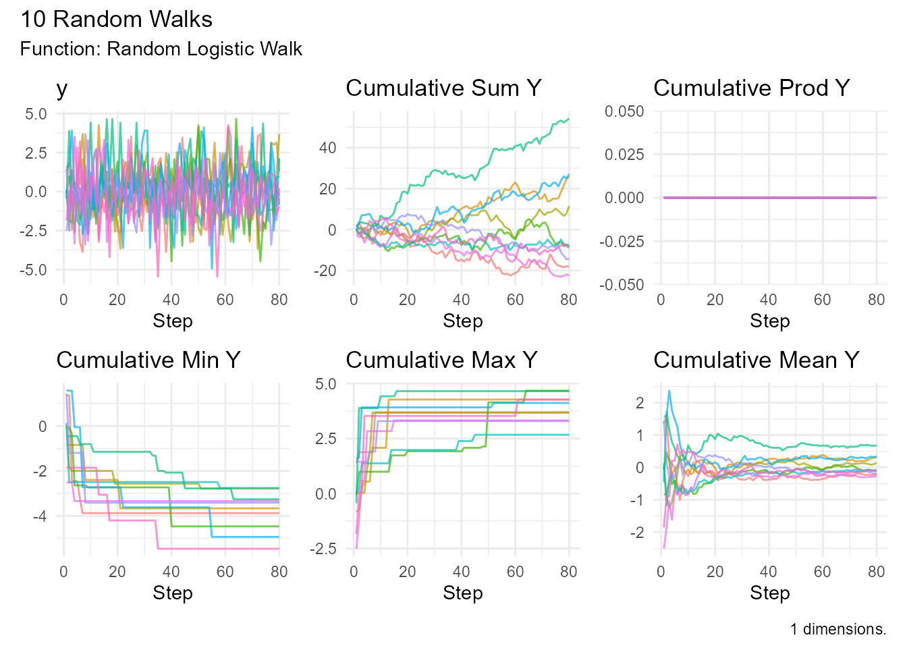
Student’s t Distribution
random_t_walk()
Random walk with t-distribution (adjustable tail heaviness).
Function Signature:
random_t_walk(
.num_walks = 25,
.n = 100,
.df = 5,
.initial_value = 0,
.ncp = 0,
.samp = TRUE,
.replace = TRUE,
.sample_size = 0.8,
.dimensions = 1
)Parameters: - .df - Degrees of freedom
(controls tail heaviness) - .ncp - Non-centrality
parameter
Properties: - Heavier tails than normal (for low df) - Approaches normal as df → ∞ - Mean = 0 (if df > 1) - Variance = df/(df-2) (if df > 2)
Use Cases: - Robust statistics - Small sample inference - Financial returns modeling
Example:
# Heavy tails (df = 3)
random_t_walk(.num_walks = 10, .df = 3) |>
visualize_walks()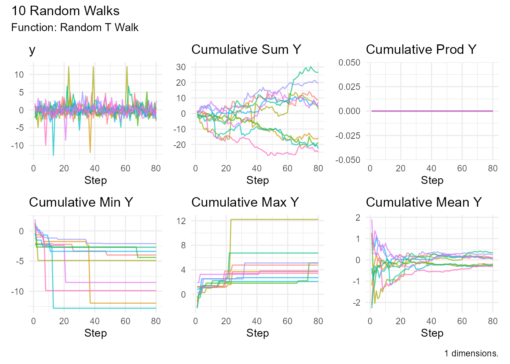
# Nearly normal (df = 30)
random_t_walk(.num_walks = 10, .df = 30) |>
visualize_walks()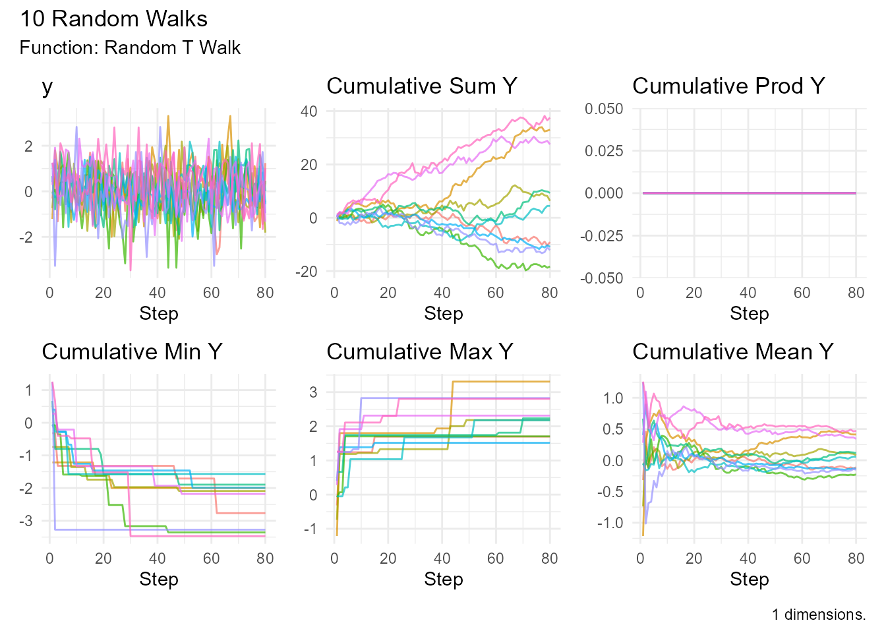
Uniform Distribution
random_uniform_walk()
Random walk with uniformly distributed steps.
Function Signature:
random_uniform_walk(
.num_walks = 25,
.n = 100,
.min = 0,
.max = 1,
.initial_value = 0,
.samp = TRUE,
.replace = TRUE,
.sample_size = 0.8,
.dimensions = 1
)Parameters: - .min - Minimum value -
.max - Maximum value
Properties: - All values equally likely - Mean = (min + max) / 2 - Variance = (max - min)² / 12
Use Cases: - Modeling equal probabilities - Random sampling - Monte Carlo simulations
Example:
# Symmetric around 0
random_uniform_walk(.num_walks = 10, .min = -1, .max = 1) |>
visualize_walks()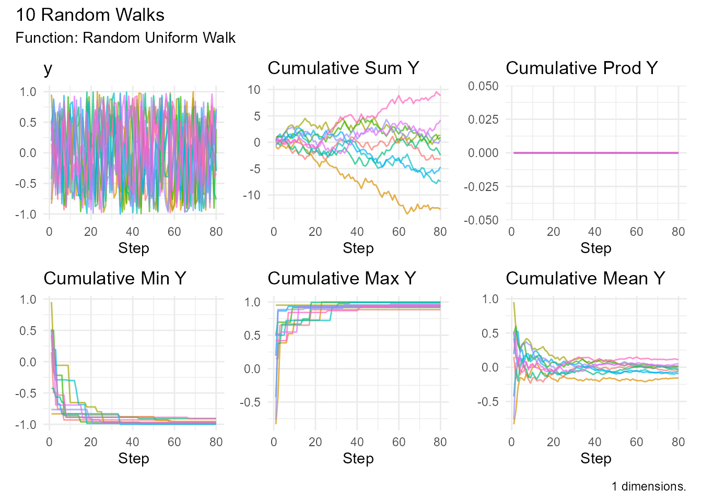
Weibull Distribution
random_weibull_walk()
Random walk with Weibull distribution (flexible lifetime model).
Function Signature:
random_weibull_walk(
.num_walks = 25,
.n = 100,
.shape = 1,
.scale = 1,
.initial_value = 0,
.samp = TRUE,
.replace = TRUE,
.sample_size = 0.8,
.dimensions = 1
)Parameters: - .shape - Shape parameter
(k) - .scale - Scale parameter (λ)
Properties: - Steps always positive - shape < 1: Decreasing failure rate - shape = 1: Constant failure rate (exponential) - shape > 1: Increasing failure rate
Use Cases: - Reliability engineering - Survival analysis - Wind speed modeling - Materials science
Example:
# Different shape parameters
random_weibull_walk(.num_walks = 10, .shape = 0.5) |>
visualize_walks()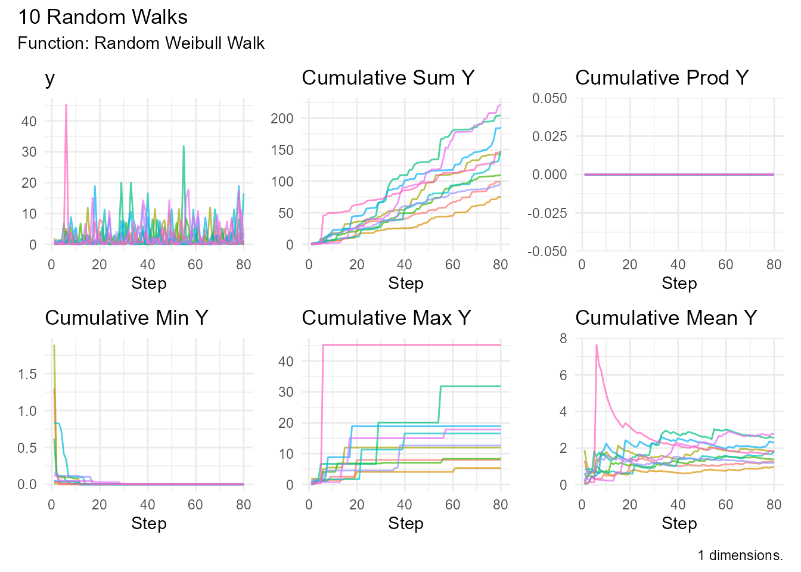
random_weibull_walk(.num_walks = 10, .shape = 2) |>
visualize_walks()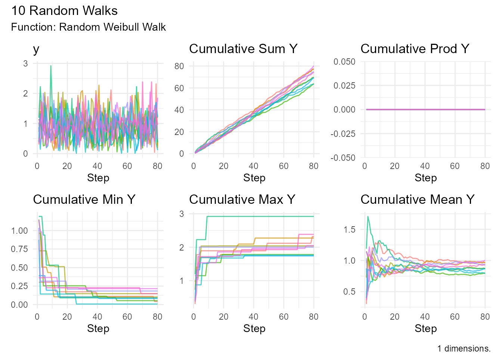
Comparison Guide
When to Use Each Distribution
| Distribution | Use When… | Key Property |
|---|---|---|
| Normal | General modeling, natural phenomena | Symmetric, bell-shaped |
| Brownian Motion | Continuous stochastic processes | Foundation of stochastic calculus |
| Geometric Brownian | Stock prices, always positive | Log-normal, multiplicative |
| Beta | Bounded processes (0-1) | Flexible shapes, bounded |
| Cauchy | Extreme events, heavy tails | No mean/variance |
| Chi-Squared | Sum of squares, variance tests | Right-skewed, positive |
| Exponential | Time between events | Memoryless property |
| F | Variance ratios | Ratio of chi-squared |
| Gamma | Positive values, waiting times | Flexible, positive |
| Log-Normal | Multiplicative processes | Right-skewed, positive |
| Logistic | S-curves, classification | Heavier tails than normal |
| Student’s t | Robust modeling, small samples | Adjustable tail heaviness |
| Uniform | Equal probabilities | All values equally likely |
| Weibull | Reliability, survival | Flexible failure rates |